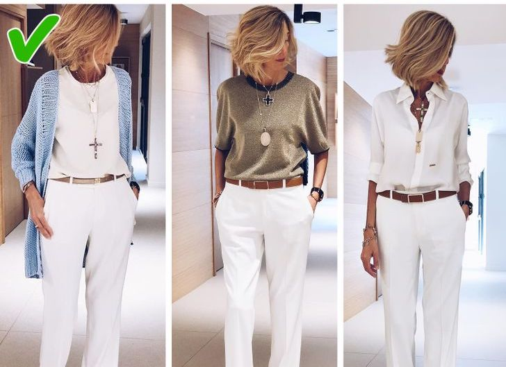
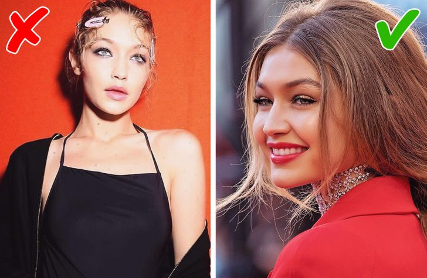
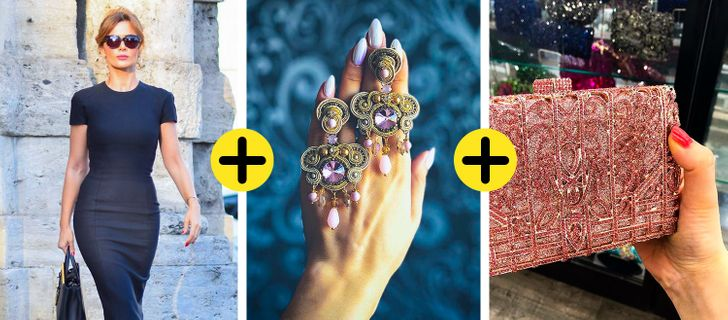

- Visualise un look complet
Si tu veux régler les problèmes de ton placard une fois pour toutes, tu dois arrêter de choisir des vêtements individuels et commencer à visualiser des tenues complètes, en incluant les accessoires. Avant d’acheter quelque chose, demande-toi avec quoi tu vas le porter. Si dans ta tête, tu as trois ou quatre variantes de looks possible, alors cela en vaut la peine, tu peux donc l’acheter.
- Choisis les boutiques adaptées
Les boutiques où tu achètes tes vêtements doivent être en accord avec ton âge et tes caractéristiques physiques. Si à 20 ans, tu peux te permettre des robes plus simples et économiques en fonction de tes moyens, après 35 ans, tu dois privilégier les tissus plus coûteux et de qualité, avec une coupe adaptée, pour avoir une apparence classe et non pas celle d’une femme mûre qui veut encore s’habiller comme une adolescente de 17 ans.
Cela s’applique également aux jeunes femmes qui choisissent des marques destinées aux femmes plus âgées. Il est important d’analyser les différents magasins des grandes centres commerciaux et de choisir 6 ou 7 boutiques qui te correspondent. En examinant les boutiques, renseigne-toi pour savoir à qui est destinée la marque (classe sociale, âge) et quels vêtements sont les plus prisés (dans certaines, ce sont les pantalons, pour d’autres, plutôt les robes et articles tricotés). Il s’agit d’un excellent moyen d’optimiser le temps et l’effort pendant les achats. Tu arrêteras de perdre ton temps dans des enseignes qui n’en valent pas la peine.
- Prépare la base et rajoute les tendances
Les articles basiques sont les piliers de n’importe quelle garde-robe. Ils sont simples, ne se démodent jamais et se combinent parfaitement avec tout. Cette base doit représenter 70% de ton armoire, les 30% qui restent doivent être les tendances du moment. En ajoutant de la modernité, tu auras un dressing actuel et stylé. Il sera amplement suffisant d’acheter 2 ou 3 vêtements tendances chaque saison, pour que ta base obtienne de nouvelles couleurs : de cette façon, plus besoin de dépenser des sommes astronomiques lors de tes sessions shopping.
- Détermine 3-4 hauts pour chaque jupe et pantalon
La règle principale dans ton dressing est la suivante : différentes options qui s’adaptent à une jupe ou à un pantalon. La partie supérieure est celle qui donne l’impression d’être une nouvelle tenue. Si tu portes la même blouse, en changeant de jupe et de pantalon, cela donnera l’impression d’être toujours habillée de la même manière. Mais si tu accordes ton pantalon avec d’autres options, tu obtiendras une nouvelle tenue, tu seras vraiment habillée différemment et tu n’auras pas besoin d’acheter un nouveau bas pour aller avec ta nouvelle chemise.

- Mélange différents styles, rajoute une touche sportswear
Les looks les plus intéressants sont composés de contraste de couleurs, de textures et de style, indéniablement. Par exemple, en rajoutant quelques éléments ethniques ou grunges à la tenue. Actuellement, les vêtements les plus classes se mélangent avec le côté sportif.
Un style sportswear ne se cantonne pas juste à un sweat et à des baskets. Il est divisé en de nombreuses catégories comme le style safari, marin, militaire, sportif (en lien avec le sport en lui-même), entre autres. Plus le tissu est simple et les détails sont visibles (coutures, boutons, poches supérieures, etc.) plus le vêtement est associé au style sportswear. Ces éléments ajoutent du dynamisme et de l’énergie, rendant la silhouette plus stylée et élégante et il s’agit d’un excellent moyen de paraître plus jeune après l’âge de 40 ans.
- Privilégie des couleurs qui vont parfaitement avec ton teint
Rien ne cause plus de tort à un look qu’une couleur qui ne s’accorde pas avec le visage. Cela donne un aspect malade, faisant ressortir les imperfections de la peau, les changements dûs à l’âge, ainsi que d’autres défauts. Pour cela, il est nécessaire de connaître la palette de couleurs qui te va le mieux et que tu dois utiliser, pour les avoir dans ton dressing.
Si le choix de la couleur du sac ou des chaussures ne rentrent pas franchement en ligne de compte, les vêtements et les accessoires, eux, doivent être choisis minutieusement. Et plus nous prenons de l’âge, plus il faudra faire attention à ce type de détail. Oublie les tons avec une touche de gris, privilégiant les notes pures et claires ou les couleurs vives de ta palette.

- Comment choisir la bonne longueur de robe ou de jupe
Prends une photo de toi de plein pied, en sous-vêtements, par-dessus pose une feuille de papier et monte-la progressivement au-dessus de ta silhouette. Analyse ce que tu veux, jusqu’où tu apprécies de voir tes jambes, quelle longueur est la plus appropriée pour ne pas les couper et ce qui te va le mieux. Tu peux également disposer un morceau de tissu sur ton corps, devant le miroir, mais sur une photo tu le verras plus facilement. Pour ne pas te tromper, tu peux faire deux photos différentes : l’une avec des talons et l’autre avec des chaussures plates.
- Accessoires
Les accessoires complètent le look, le rendant plus classe et plus intéressant. Leur fonction peut être comblée avec des ornements, des sacs, des chaussures, mais également des imprimés, des textures, de jolis boutons, etc. Souvent, ce sont eux qui créent le look. En choisissant une robe simple et unie, de sublimes chaussures, des bijoux et un beau sac, tu peux créer une tenue spectaculaire et avec du style.
